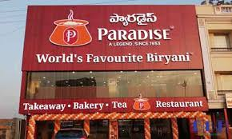

Paradise
Paradise is one of the most iconic restaurant brands in Hyderabad. It is especially famous for its Hyderabadi biryani and large dining spaces. Over the years, it has expanded to many branches across the city and even outside Hyderabad. The restaurant combines tradition with a modern dining experience.
